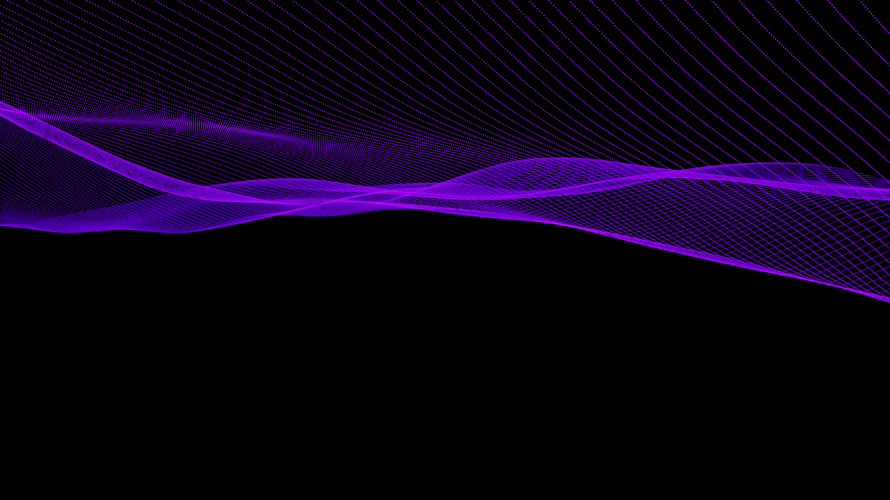
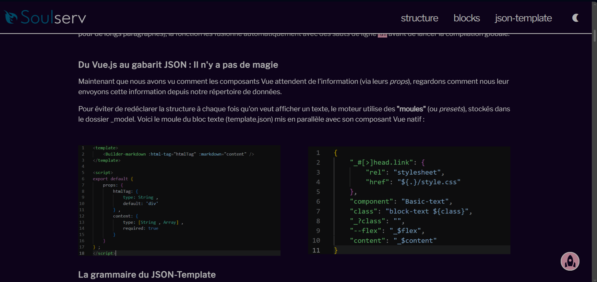
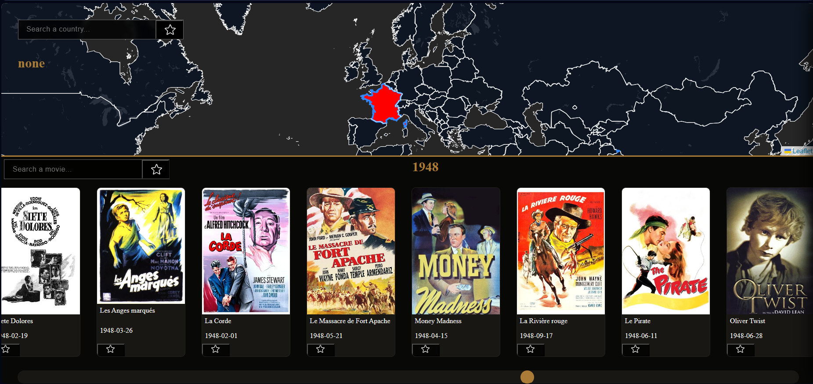
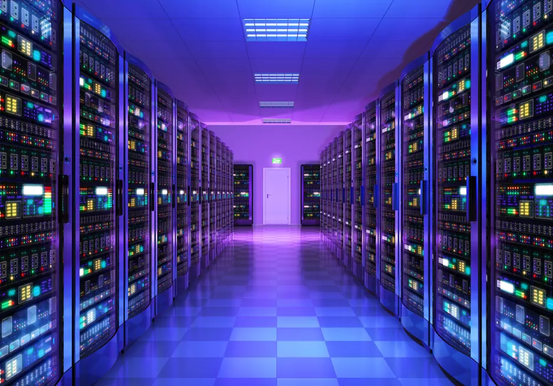

K NEAREST NEIGHBOR
CATEGORY : ALGORITHMS
Group project with Simon to sort news dispatches. Instead of using keywords, we used a relative approach, measuring a new dispatch's closeness to a reference one to meet client needs for accuracy and speed.


Implementation of a 3D software rasterizer from scratch in C++ based on a university course (not from mine university ). Built to understand how GPUs work under the hood, covering Bresenham's line drawing, z-buffering, perspective projection, and shading, all without external graphics libraries.

Second-year IT degree internship at the start-up Soulserv. Reverse engineering mission focused on creating comprehensive technical documentation and porting websites from a V1 to a V2 using an internal tool.

A novel movie discovery platform blending interactive geographic search with a timeline slider to unearth hidden cinematic gems. Built with a strict MVC architecture using Vanilla JS, integrating TheMovieDB and Leaflet APIs. A collaborative two-person project developed in under two weeks.

Group project with Simon to sort news dispatches. Instead of using keywords, we used a relative approach, measuring a new dispatch's closeness to a reference one to meet client needs for accuracy and speed.

A sorting algorithm that works recursively, like Russian dolls. It was my first real introduction to recursion—a challenging deep dive into separating what the algorithm actually is versus what I thought it was.

Set up a complete hosting environment from scratch using Apache 2, PostgreSQL, and PHP. A highly autonomous project requiring extensive research to configure and link the different servers together.

Designed an SQL database schema for a bowling alley based on client specs and populated it via CSV. A demanding group project that taught me valuable lessons in communication and respecting a partner's perspective.

Cleaned and analyzed accident severity data (2006-2019) using PostgreSQL. Queried the database to extract insights, create graphs, and interpret trends. Worked in collaboration with Simon.
i feel like nothing was done but in reality i've learned the basic of what is my present and what would be my future by that i mean the subject (vector ,irrational number ,differential equation and most importantly the youtubers that i watched it is thanks of them that i now know that i want to do graphic programming )
"the struggle is real " pretty much sum up how i felt during those 2year it was extra-mega hard because i was an averge / below averge student it is very classic but i did encounter amazing peapol in their personality , skils and interest also during those year i were less guided than before and liked the subject more so i enjoyed this aspect as my ultimate goal is not really to become an graphic programmer but one that can also do evrythings else chemestry / electronic / history etc... somone that know and know how to do more than an engenner and for that as pretencious as it is being a graphic programmer is a good start
not done yet but i know from a member of the iut of grenoble that it will be easier so i will have more time for side projects also i'm currently searching a work-study
(it's not that hard i promise gl ;) ) f's: t"xqz" q": sf/ lc xoz:lù lk t"xq fp x doxm"fnr: moldoxjj:o xk/ "lk:pqùv f /lk'q q"fkh f tfùù d:q x gly xcq:o jv jxpq:o lo :kd:k::ofkd /:do:: xk/ f /lk'q txkq jv jlj ql cfk/ q"fp xùpl f'j o:xùùv :ufq:/ ql d:q zùlp:o ql q": jxpq:o / :zlù: /p:ùc-ù:xokfkd (t"fz" f xùo:x/v /l ) y:zxrp: f tfùù cfkxùùv ù:xok xùjlpq :uùrpfsùv t"xq f txkq